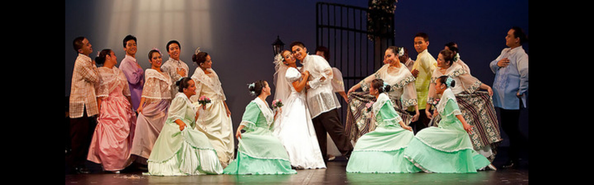

Discover the grace of courtship dances and Filipino culture through music and motion.


Cariñosa, meaning 'loving' or 'affectionate', is a Philippine courtship dance that expresses romantic feelings between a man and a woman. It is characterized by slow, graceful movements, a three-step waltz, and a hide-and-seek element, traditionally using a fan and a handkerchief.
This dance was introduced during the Spanish colonial period and belongs to the Maria Clara set of folk dances, named after the demure heroine of Jose Rizal's novel. It became popular nationwide, especially in the 1950s when it was formalized as the Philippines' national dance by the Bureau of Education.
While it is now performed all over the Philippines, the Cariñosa is most strongly associated with the Visayan Islands, particularly the island of Panay. Its choreography is a fusion of Spanish colonial ballroom dance and indigenous Filipino modesty, creating a unique display of national identity.
Experience the full beauty and elegance of the Cariñosa as performed by professional folk dancers. This video captures the intricate footwork and flirtatious fan and handkerchief movements of the national dance.
Direct